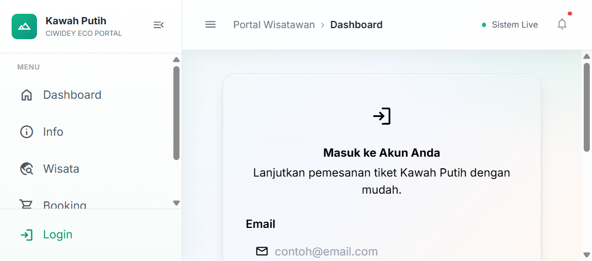
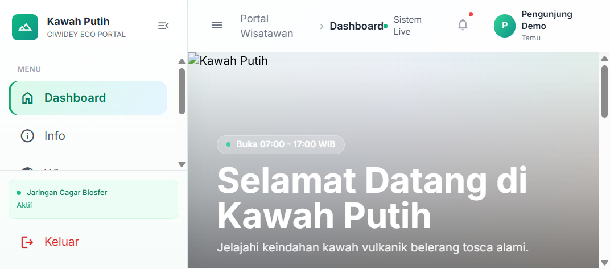
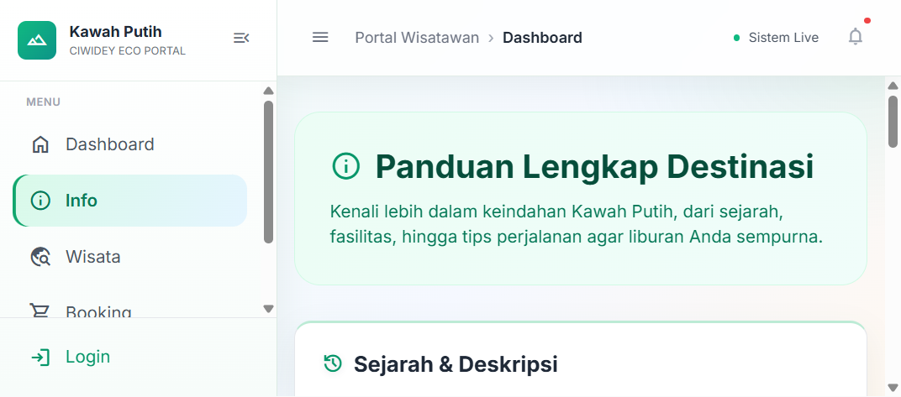
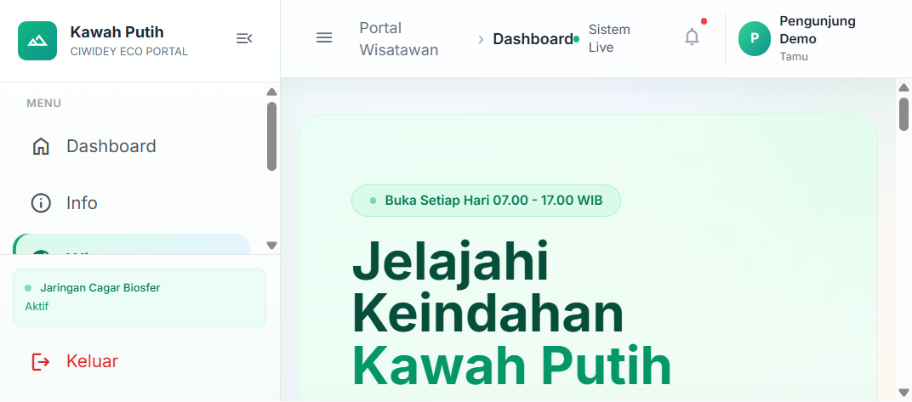
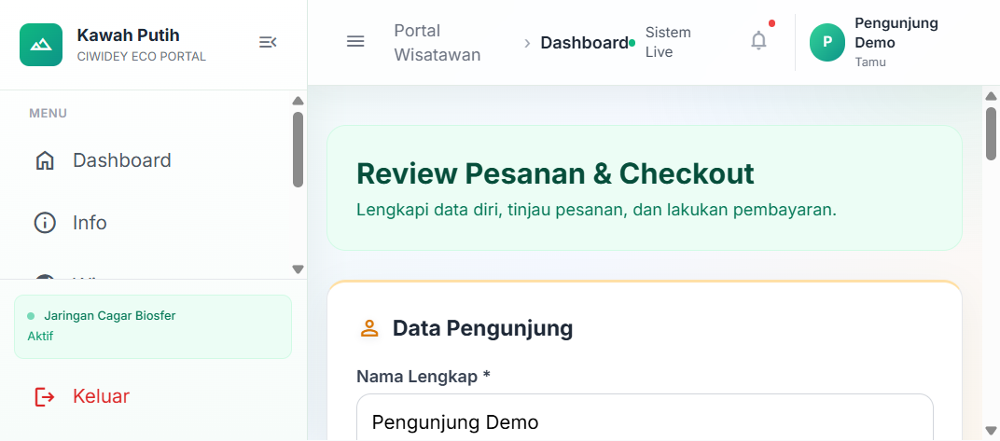
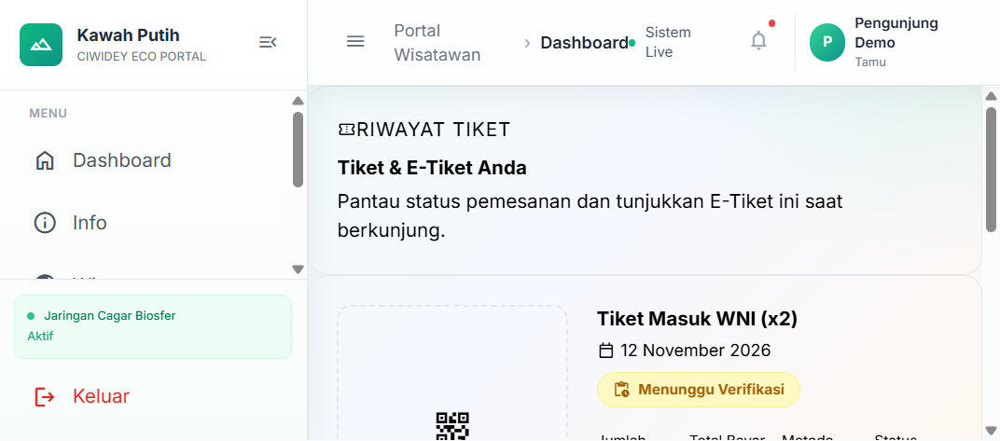
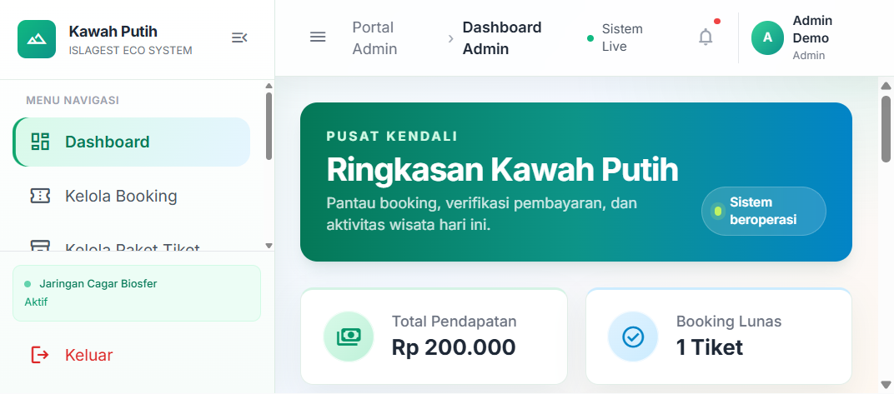
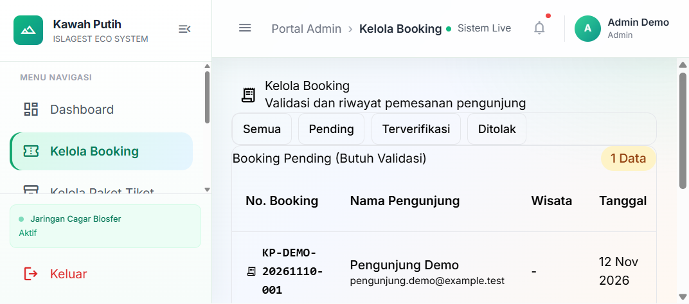
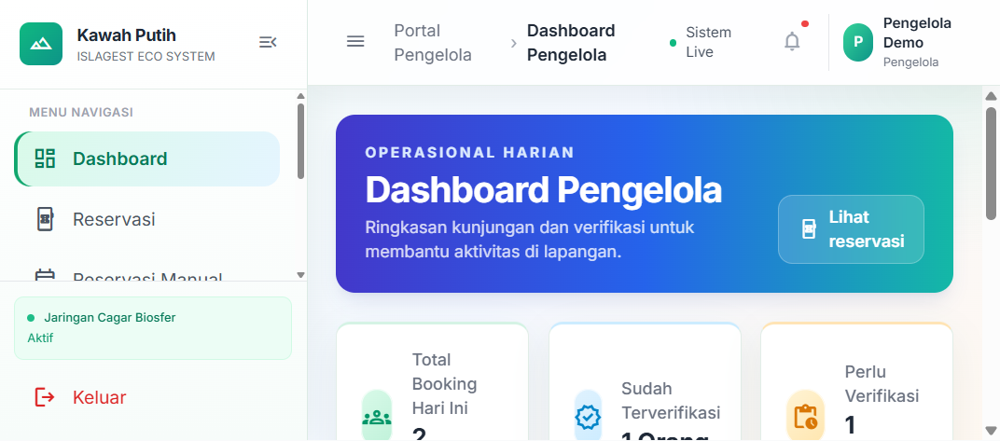
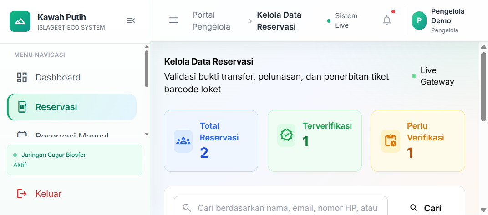

Laporan Akhir Proyek
Finalisasi, Dokumentasi, dan Persiapan Rilis
Aplikasi web untuk pengunjung, admin, dan pengelola destinasi wisata.
Laravel 12PHP 8.2+Blade
Tanggal penyusunan: 10 November 2026
Tim pengembang: Lengkapi nama anggota dan pembagian tugas aktual sebelum diserahkan.
Dokumen disusun dari struktur proyek, route, migrasi, controller, view, dan hasil tes lokal. Screenshot di bagian bukti diambil dari aplikasi pada browser menggunakan database demo terisolasi dan data sintetis.
Sprint 4 berfokus pada finalisasi aplikasi, dokumentasi, persiapan rilis, presentasi, dan latihan demonstrasi. Proyek yang diperiksa adalah aplikasi booking wisata Kawah Putih berbasis Laravel, sehingga contoh perpustakaan dan endpoint buku pada lembar Sprint 4 disesuaikan dengan fitur yang benar-benar tersedia.
| Area Sprint 4 | Hasil yang disiapkan |
|---|---|
| Perbaikan dan verifikasi akhir | Menjalankan tes fitur/unit dan memeriksa route utama serta halaman error. |
| Persiapan deployment | Checklist server, environment, database, storage, backup, dan uji pascarilis. |
| Dokumentasi teknis/API | Menjelaskan arsitektur, role, endpoint JSON aktual, dan formulir web booking. |
| Panduan pengguna | Langkah penggunaan pengunjung, admin, dan pengelola serta pemecahan masalah. |
| Presentasi dan demo | Alur presentasi, bukti layar aplikasi, skenario demo, dan lembar pembagian kontribusi. |
| Peran | Tanggung jawab utama | Akses aplikasi |
|---|---|---|
| Pengunjung | Melihat info/paket, mendaftar, membuat booking, melihat tiket dan riwayat. | Portal publik dan halaman pengunjung setelah login. |
| Admin | Memeriksa booking/pembayaran, mengelola paket, akun pengelola, dan konten. | Panel admin dengan pembatasan role. |
| Pengelola | Memantau reservasi, status kunjungan, pengaturan operasional, dan analitik. | Panel pengelola dengan pembatasan role. |
Pengunjung memilih paket → mengisi data/tanggal → mengirim bukti pembayaran → booking berstatus menunggu. Admin memeriksa bukti dan menetapkan status terverifikasi atau ditolak. Pengelola memantau daftar reservasi dan status kunjungan.
| Tabel | Fungsi / hubungan penting |
|---|---|
| users | Akun dan role pengunjung/admin/pengelola. |
| bookings | Transaksi utama; menyimpan kode, kontak, tanggal, jumlah, paket, total, status, item, dan bukti. |
| pakets | Katalog paket aktif, kategori, harga, dan urutan tampilan. |
| reservasis | Data reservasi manual untuk alur operasional terpisah. |
| wisatas | Data tempat wisata yang dapat dikaitkan secara logis dengan booking. |
| operasional_settings | Pengaturan cuaca, kuota, status gerbang, dan informasi lapangan. |
| orders | Skema/model tersedia, namun checkout aktif saat ini membuat data pada tabel bookings. |
Relasi utama: satu user dapat mempunyai banyak booking; booking dapat menyimpan user pemesan dan user yang memverifikasi/menolak. Nama/harga paket yang dipilih disimpan sebagai snapshot pada booking, bukan foreign key langsung ke paket. Kolom wisata_id pada booking belum menggunakan foreign key.
| Method / URL | Akses | Tujuan dan hasil |
|---|---|---|
| GET /api/operasional | Publik | Mengembalikan objek pengaturan operasional saat ini. |
| GET /api/check-status | Pengunjung login | Mengembalikan peta ID booking ke status pembayaran milik user; objek kosong jika tidak ada. |
| GET /admin/booking/{id}/detail | Admin login | Mengembalikan detail booking; ID tidak ditemukan menghasilkan 404. |
POST /pembayaran/proses adalah formulir web (bukan JSON API), memakai session dan CSRF serta multipart/form-data. Field utamanya: nama, email, nomor HP, tanggal kunjungan, jumlah tiket (1–100), metode pembayaran, JSON keranjang, dan bukti gambar JPEG/PNG/JPG maksimal 2 MB. Booking baru disimpan dengan status pending.
Tangkapan viewport halaman aplikasi yang dibuka pada browser lokal. Data nama/akun pada screenshot adalah data demo sintetis.

Gambar 1. Form login pengunjung.

Gambar 2. Dashboard pengunjung berisi ringkasan wisata dan akses ke katalog.
Screenshot diambil pada lingkungan demo lokal, bukan dari situs produksi.

Gambar 3. Informasi destinasi, fasilitas, tarif, dan tips pengunjung.

Gambar 4. Katalog paket wisata untuk pemesanan.

Gambar 5. Form review checkout dan pengisian data booking.

Gambar 6. Riwayat tiket menunjukkan kode booking dan status pembayaran.

Gambar 7. Dashboard admin menampilkan ringkasan pendapatan dan status booking.

Gambar 8. Daftar booking untuk pemeriksaan dan verifikasi admin.

Gambar 9. Dashboard pengelola merangkum reservasi dan verifikasi.

Gambar 10. Daftar reservasi menyediakan pencarian dan ringkasan status.
| Kondisi | Tindakan |
|---|---|
| Login gagal/tidak punya akses | Periksa email, password, dan halaman login sesuai role; hubungi admin untuk pemeriksaan akun. |
| Validasi booking gagal | Pastikan keranjang tidak kosong, tanggal valid, jumlah 1–100, dan metode pembayaran tersedia. |
| Bukti ditolak | Gunakan JPEG/PNG/JPG dengan ukuran tidak melebihi 2 MB. |
| 404 atau gangguan 500 | Periksa URL atau coba kembali; cek status booking sebelum mengirim ulang pembayaran. |
Deployment produksi belum dilakukan. Checklist ini menyiapkan rilis pada hosting yang mendukung PHP dan MySQL/MariaDB.
| Area | Hasil |
|---|---|
| Test suite Laravel | 13 tes lulus; 49 assertions; 0 gagal. |
| Autentikasi dan role | Redirect login admin, pengelola, pengunjung, dan guest diuji. |
| Alur pengunjung | Booking disimpan, validasi keranjang, katalog paket, dan riwayat tiket diuji. |
| Panel operasional | Halaman admin, pencarian/pagination reservasi diuji. |
| Error handling | Halaman 404 ramah dan kegagalan database ke 500 diuji. |
Perintah yang dijalankan: php artisan test. Hasil berasal dari lingkungan lokal. Belum mencakup deployment hosting, pengujian beban, pemulihan backup produksi, atau smoke test pada server luar.
| Nama anggota | Bagian aktual | Bukti kontribusi | Materi penjelasan |
|---|---|---|---|
| [Isi nama] | [UI/UX dan halaman] | [File/halaman/commit] | Struktur, form, validasi frontend |
| [Isi nama] | [Controller dan alur booking] | [File/tes/commit] | Validasi server, status, akses role |
| [Isi nama] | [Database/deployment] | [Migrasi/konfigurasi] | Relasi, migrasi, environment |
| Checklist | Status / catatan |
|---|---|
| README, dokumentasi API, dan panduan pengguna | Tersedia pada proyek; sesuai fitur Laravel Kawah Putih. |
| Screenshot halaman pengunjung, admin, dan pengelola | Disertakan dalam dokumen; diambil pada browser lokal memakai data sintetis. |
| Hasil tes otomatis | 13 lulus, 49 assertions, 0 gagal pada pemeriksaan lokal. |
| Akun demo untuk presentasi | Siapkan ulang di lingkungan demo; tidak ada password demo produksi dalam dokumen. |
| Nama anggota dan pembagian kontribusi | Isi berdasarkan tugas dan bukti kerja aktual. |
| Deployment dan smoke test server | Belum dilakukan/terbukti; jalankan dan catat bila menjadi syarat penilaian. |
| Backup serta pemulihan | Siapkan dan verifikasi prosedur pada lingkungan tujuan. |
Aplikasi telah memiliki alur utama untuk pengunjung, admin, dan pengelola, serta dokumentasi Sprint 4 yang mengikuti implementasi aktual. Tes otomatis lokal lulus. Sebelum serah terima akhir, lengkapi identitas tim dan lakukan uji pada server/komputer demo yang akan digunakan.
Dokumen ini merupakan ringkasan tugas Sprint 4; untuk rincian teknis per topik, rujuk README proyek dan berkas Markdown di folder docs.